Natale e i 14 film più belli da vedere.

Con dicembre sono iniziati anche milioni di film a tema natalizio. Chi non ha mai visto un film di Natale?
Nonostante siano passati gli anni tutti quanti in famiglia, o con gli amici, o anche da soli ci siamo trovati a guardare sicuramente qualche film di Natale. Molti di noi con gli anni hanno perso la magia del Natale.
Tanti invece, non vedono l'ora di questo periodo proprio per rivivere ricordi, emozioni, gioie, commozioni e sentimenti tutti insieme, da soli e in compagnia. Magari con cioccolata calda e dolci tipicamente natalizi.
Oggi in questo articolo parleremo proprio dei film più belli, secondo il mio parere, che parlano di Natale e che hanno segnato l'infanzia di molte persone ed anche la mia.
Tra quelli che ci viene in mente a primo acchito quando parliamo dei film Natale è, senza dubbio:
Mamma ho perso l'aereo:
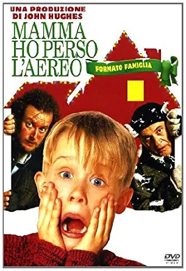
Un film che parla di un bambino che viene dimenticato dai genitori per le feste di Natale a casa e dovrà difendersi da due ladri, che vogliono entrare per forza in casa a rubare. Collegandoci a questo film poi c'è il film successivo.
Mamma ho riperso l'aereo - Mi sono smarrito a New York:
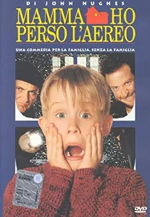
Ci troveremo di nuovo questo bambino, sempre dimenticato dalla mamma, ma questa volta si troverà New York e con i soldi del padre.
Ci saranno di nuovi gli stessi due malviventi che vogliono derubare i soldi dallo zaino. Tra le tante cose ci sarà anche un momento di riflessione, tra questo bambino e un'anziana signora senzatetto, che parlerà proprio d'amore.
Miracolo nella 34a strada:
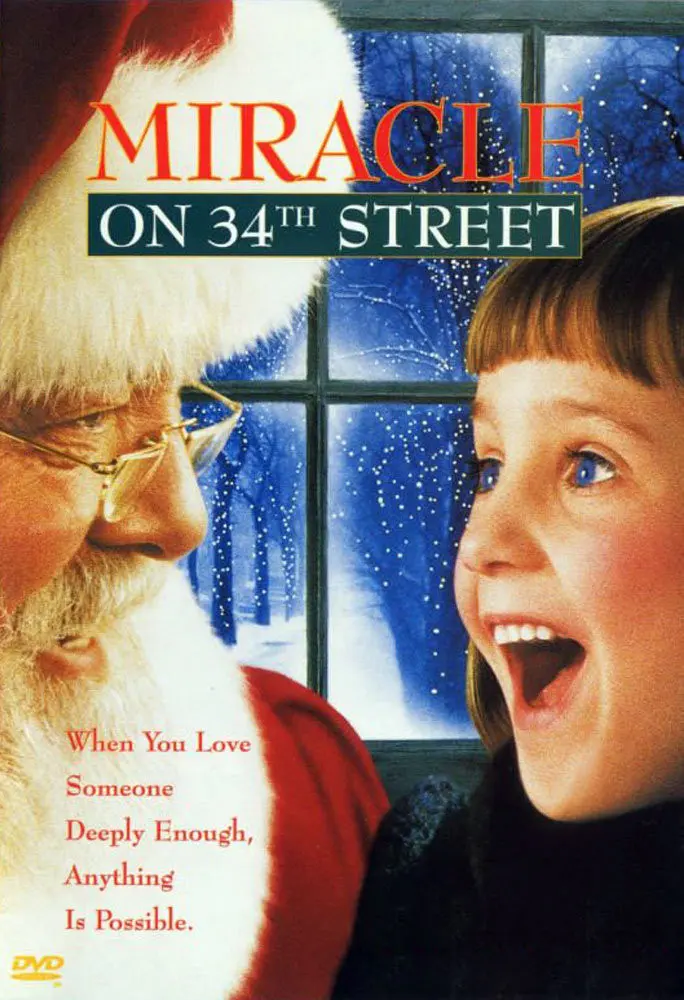
Un remake del film del 1947. Un altro che non dimenticherò mai e mi è piaciuto tantissimo per la gioia del natale e soprattutto per il significato che esso trasmette.
Parla di una bambina Susan che non crede in Babbo Natale e trova un Babbo Natale, conosciuto in un negozio di giocattoli, che le dirà di avere fiducia in lui.
Inizierà a credergli solo quando poi realizzerò i desideri che gli aveva chiesto, ovvero un papà, una casa nuova e un fratellino.
Il Grinch:
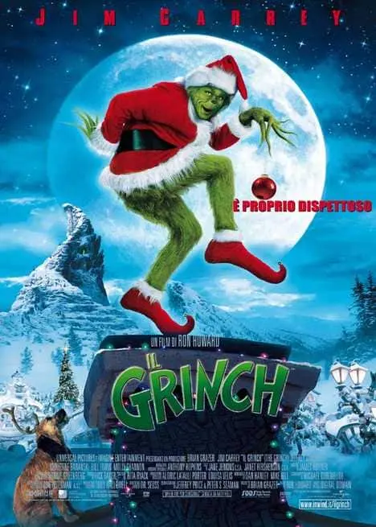
che sembra un film anti-natale ma che ha un bel significato.
Il Grinch che vediamo nel film di colore verde, odia il Natale e fa di tutto per rovinare questa festività a tutto il paese. Ma questo non è altro che un modo per attirare l'attenzione poiché viene umiliato e discriminato. Un film che tocca il tema di bullismo in chiave fiabesca, molto consigliato da vedere con i bambini e da far capire il significato.
Un amore sotto l'albero:
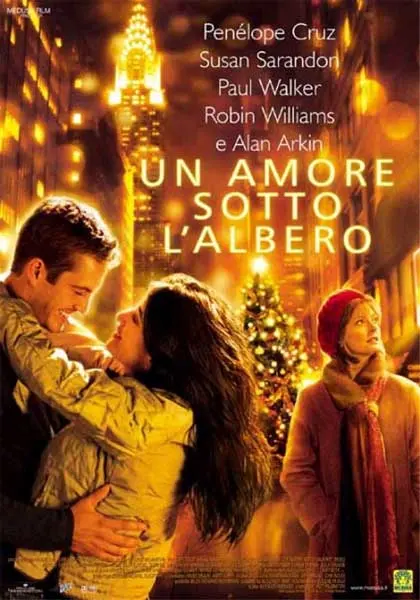
un film con un cast strepitoso. Troveremo infatti, Robin Williams, Susan Sarandon, Penelope Cruz e Paul Walker.
Il film gira intorno a 5 storie, collegate tra loro solo da una serie di eventi che accadono la Vigilia di Natale e che porterà, i protagonisti delle storie, a guardare la vita sotto un'altra ottica. Bellissimo film. Soprattutto perché rivediamo Robin Williams che è stato un'artista indimenticabile morto nell'agosto del 2014. Ed anche Paul Walker, che ricorderete sicuramente in Fast and Furious, morto anche lui nel novembre del 2013.
Mary Poppins:
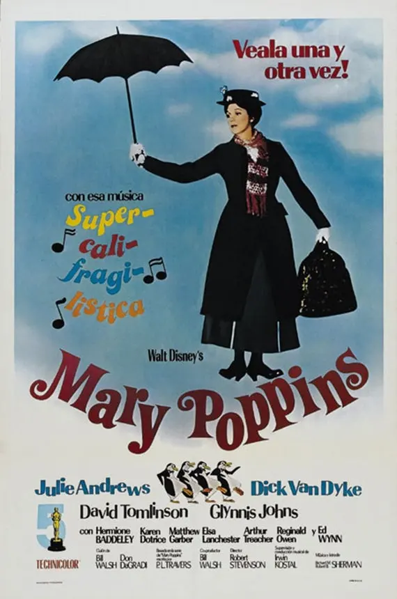
non è propriamente un film natalizio ma è comunque un film stupendo da vedere con i bambini, prodotto dalla Walt Diney nel 1964 e rivisitato nel 2018.
Narra di una speciale baby sitter con magie e le loro avventure.
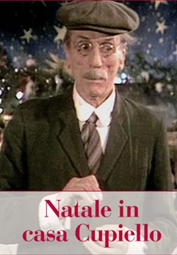
Natale in casa Cupiello:
non è un film ma è una commedia tragicomica di Eduardo De Filippo che recitano il natale povero di Napoli.
Tra battute e tragedie familiari.
Elf:
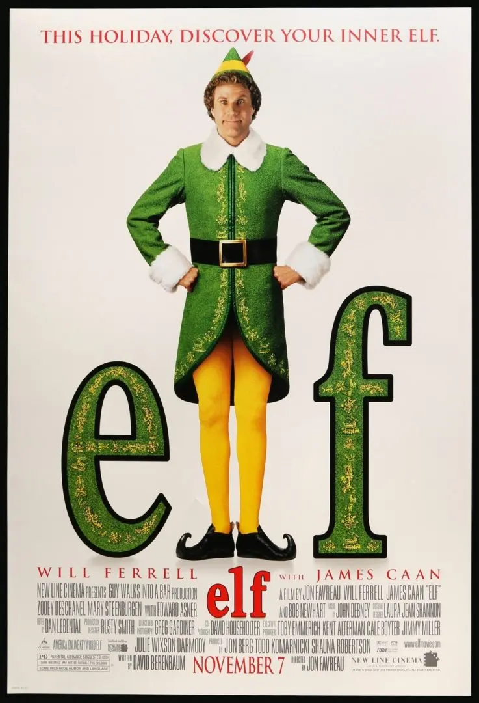
Un cult davvero divertente da vedere con tutta la famiglia.
Questo film Narra di un bambino Orfano Buddy, che accidentalmente cade nel sacco dei giochi di Babbo Natale e va a finire fino al Polo Nord.
Qui inizia la sua vita da elfo insieme agli aiutanti di Babbo Natale.
Diventato grande, papà Natale gli dirà che non è il vero padre, così Buddy, vestito da elfo, andrà via dal Polo Nord per andare a conoscere il vero padre.
Il figlio di Babbo Natale:
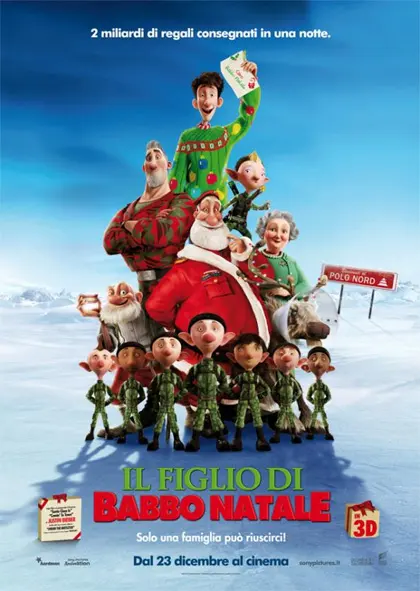
è un cartone animato fatto davvero molto carino. Come da titolo, parla del figlio di babbo natale, Steve.
Con l'aiuto di tantissimi elfi, aiuterà il padre a consegnare i regali ai bambini di tutto il mondo.
Canto di Natale di Topolino:
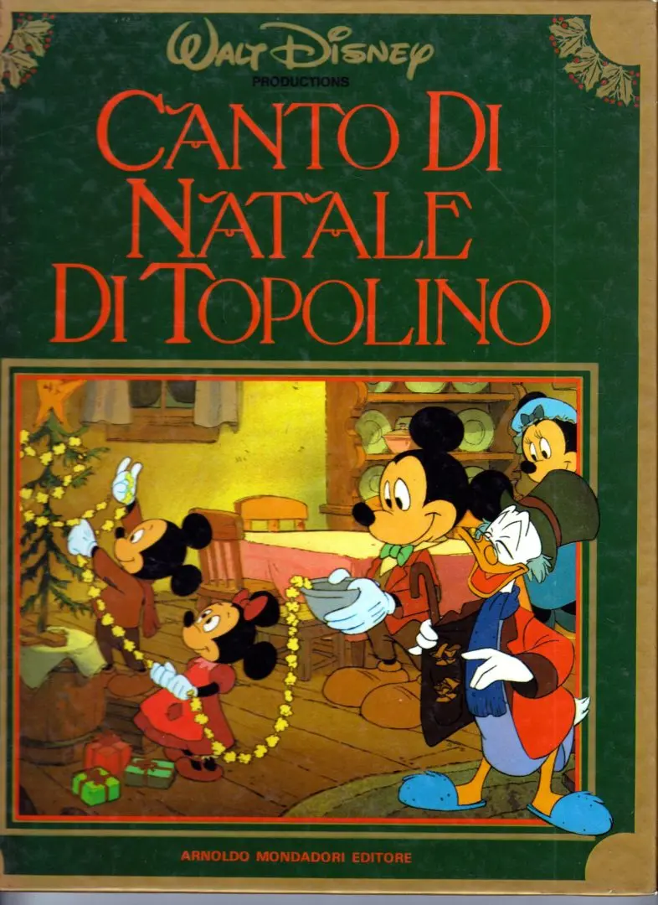
questo è un cortometraggio del 1983 creato dalla Walt Disney.
Parlerà di Topolino e dei suoi amici nei giorni bellissimi del Natale.
Santa Clause:
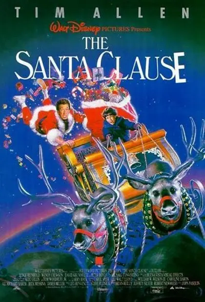
film del 1994 che vede come protagonista Tim Allen. La storia parla di Scott, un padre divorziato.
La notte di Natale sente dei rumori sul tetto, uscito a vedere cosa fossero quei rumori, farà cadere l'uomo dal retto ovvero babbo natale.
Ormai defunto dopo la caduta, d'improvviso sparisce e ciò che resta di lui è solo il vestito rosso e un biglietto da visita. Scott scoprirà che quello non è un biglietto da visita ma bensì un contratto che dichiari, in caso di morte, chi ha causato la morte di babbo natale dovrà indossare il vestito rosso e continuare da dove Santa Claus aveva lasciato.
Jack Frost:
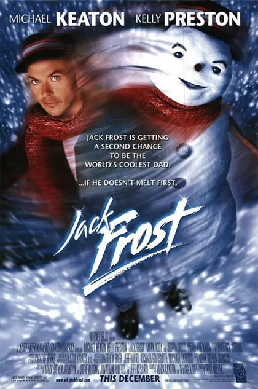
Divertente e bellissimo film da vedere senz'altro. Un film ricco di significato e molto commovente.
Parla di un bambino che ha perso il papà in un incidente stradale e perde tutta la voglia di festeggiare il Natale. Costruisce però, un pupazzo di neve con cui inizia a parlare trovando in lui la voce del padre Jack.
Questi gli ridarà di nuovo la voglia di vivere e la gioia di festeggiare con la madre ormai vedova.
Willy Wonka e la fabbrica di cioccolato:
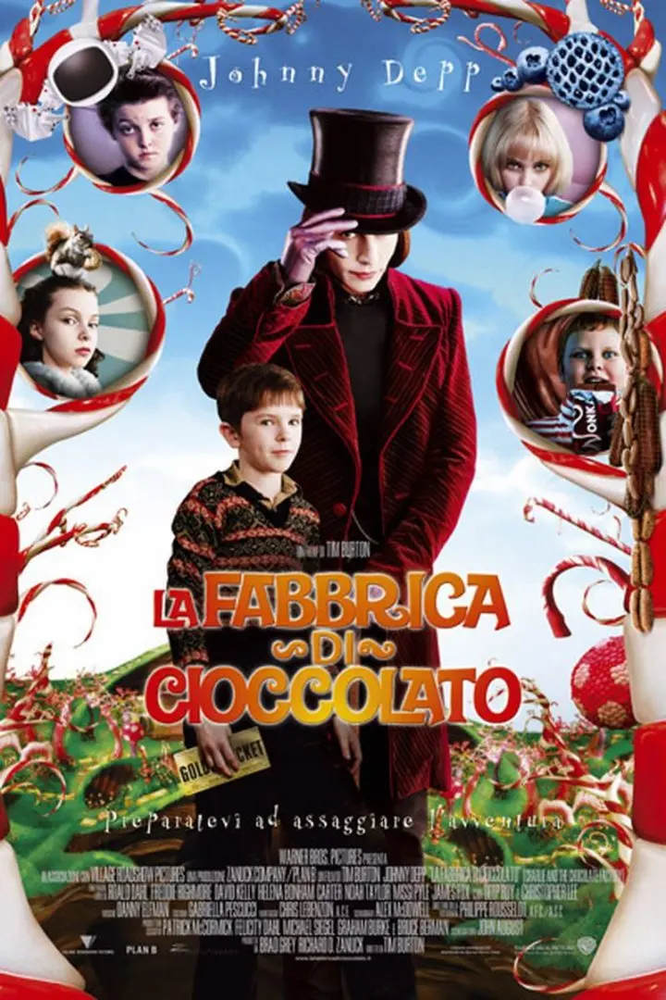
Un film del 2005 con protagonista Johnny Depp.
Il film ci racconta di un bambino, Charlie, molto povero che vive in una casetta di legno con i nonni.
A Charly piace molto il cioccolato ma non può permettersi di comprarlo.
Viene a conoscenza che il cioccolataio più famoso Willy Wonka, ha indetto un concorso con cinque fortunati vincitori.
I vincitori potranno visitare la fabbrica di cioccolato che è sempre stata chiusa al pubblico. Uno dei vincitori è proprio Charlie.
Edward mani di forbici:
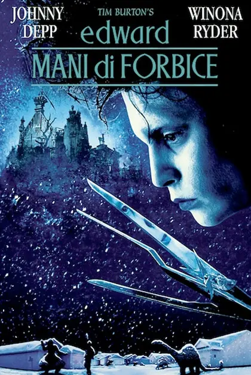
interpretato da Johnny Depp. Parla di una donna, rappresentante di cosmetici Avon che nel suo giro di porta a porta, si imbatte in un castello gotico.
Qui troverà un uomo artificiale con le mani fatte di lunghe lame.
Quest'uomo, infatti, non è stato terminato con le mani normali dal suo inventore, poiché muore prima di terminare il suo lavoro.
La donna porterà Edward con le mani di forbici a vivere a casa sua, con la sua famiglia per integrarlo.
Da qui Edward inizierà ad attirare l'attenzione di tutte le donne del paese divenendo il parrucchiere per eccellenza, usando proprio le sue mani. Costui si innamora perdutamente della figlia della rappresentante Kim.
Ma un giorno viene accusato, da tutto il paese, di aggressione verso il fratellino di Kim.
Nonostante Kim ricambi il suo amore verso Edward, lui decide di tornare a vivere isolato in questo castello.
Un film davvero toccante soprattutto per il tema di diversità.
Naturalmente sono solo alcuni dei film belli, da gustarsi in questo magico periodo dell'anno. Esistono moltissimi altre pellicole da elencare, ma noi ci siamo limitati solo a 14 che spaziano molto di genere, humour ed emozioni.
Sicuramente il Natale è un momento che fa riflettere e, come me, molti di voi, guardando questi film si troverà a farsi domande interiori e/o si giudicherà.
Ma credo che uno degli obiettivi primari di questa festività religiosa sia proprio questo. Al di là dei regali, addobbi, divertimento e dolciumi, il Natale è una ricorrenza nata apposta per farci guardare dentro. .forse per questo ci non tutti amano il Natale e fingono di essere dei piccoli grinch!